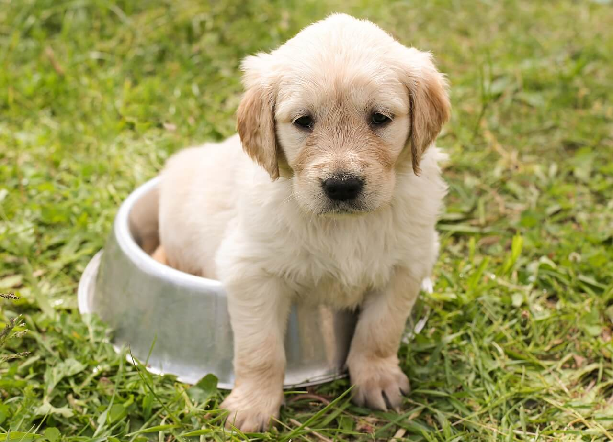
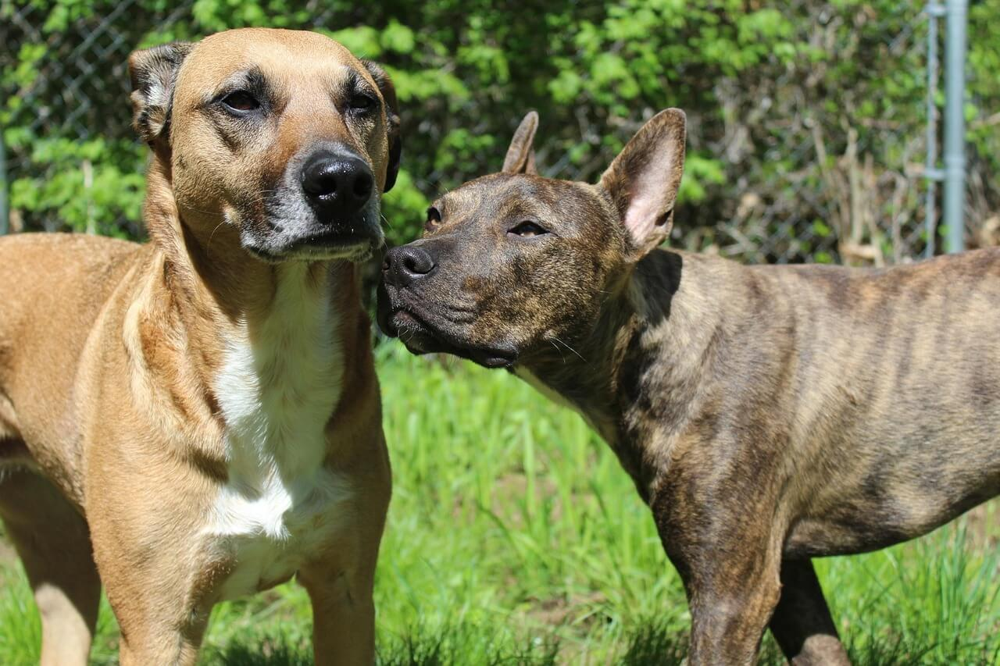

Nossos Projetos
Conheça algumas das ações que realizamos com amor e dedicação pelos animais.

Feira de Adoção
Evento mensal em parceria com o comércio local, promovendo a adoção responsável de cães e gatos resgatados.

Resgates
Equipes de voluntários que atuam no resgate e recuperação de animais em situação de abandono e maus-tratos.

Campanha de Castração
Programas acessíveis de castração e conscientização para reduzir o número de animais abandonados nas ruas.